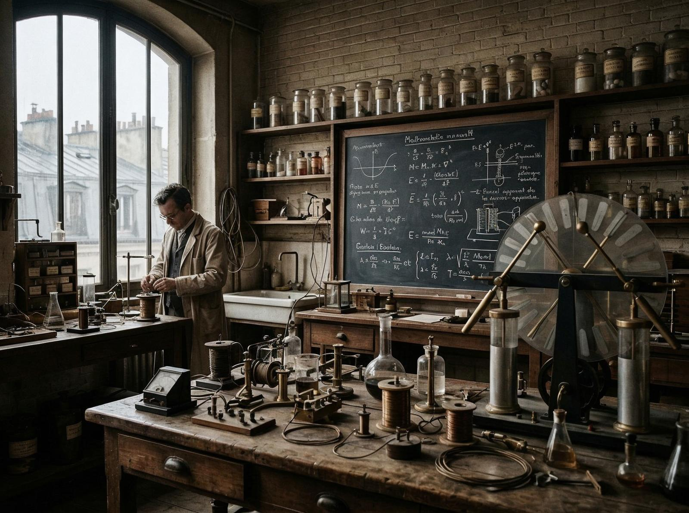
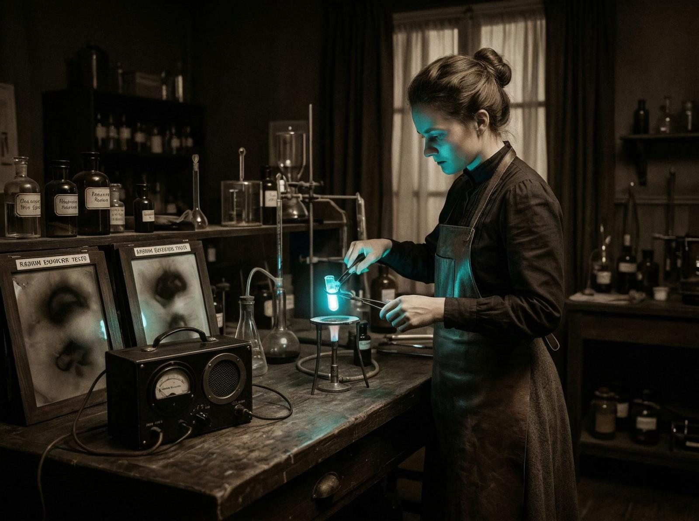

În 1891, o tânără femeie poloneză a ajuns la Paris. Nu avea bani, nu avea conexiuni, nu știa franceza perfect. Însă avea o voință de fier și o inteligență ascuțită. Își numea Marie Skłodowska, dar lumea urma să o cunoască drept Marie Curie.
A intrat la Universitatea din Paris, una dintre puținele femei acolo. A muncit zi și noapte, a mâncat puțin, a dormit puțin, dar a învățat enorm. Își propusese să devină o femeie de știință — ceva imposibil în acea vreme.
A întâlnit un om care i-a schimbat viața: Pierre Curie. Nu era doar un om de știință, era un partener, un aliat, un suflet pereche. Au decis să lucreze împreună, să descopere, să inoveze.

Tensiunea centrală a vieții lor a fost obsesia pentru radioactivitate. Au descoperit două elemente noi: poloniul și radiul. Au înțeles că radiația nu era doar un fenomen fizic, era ceva fundamental, ceva care putea schimba totul.
Dar geniul vine cu un preț. Pierre a murit într-un accident de căruță în 1906. Marie a rămas singură, cu doi copii, cu o carieră de construit, cu o lume care nu o accepta.
Faptul care m-a frapat: Marie a continuat să lucreze, să descopere, să inoveze, chiar dacă radiația îi distrugea corpul. Manuscrisele sale sunt încă radioactive, la 100 de ani după moartea ei.

A devenit prima femeie laureată cu Nobel în 1903, în fizică. Apoi a devenit prima persoană care a câștigat două premii Nobel în 1911, în chimie. Dar faima nu a contat. Contează doar descoperirea, doar știința.
A murit în 1934, la 66 de ani, de anemie aplastică, cauzată de expunerea prelungită la radiație. Nu a regreat nimic. A spus că știința merită orice sacrificiu.
Tradiția ei? Curajul, perseverența, pasiunea. O femeie care a refuzat să se lase învinsă, care a refuzat să accepte limitările, care a refuzat să dispară.
Marie Curie nu a fost doar o femeie de știință, a fost o femeie care a demonstrat că geniul nu are gen, că pasiunea nu are limite, că voința poate învinge orice obstacol.